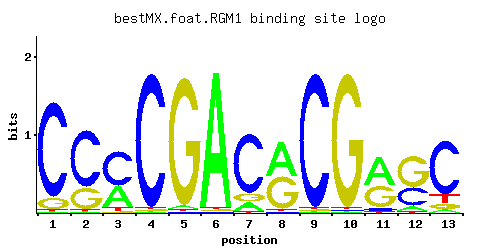

RGM1
YMR182C
Putative transcriptional repressor with proline-rich zinc fingers; overproduction impairs cell growth
Best-performing DNA-binding model.

View and copy the recommended matrices ↘
A | 0.01 0.01 0.35 0.01 0.02 0.97 0.10 0.50 0.01 0.01 0.52 0.07 0.04 C | 0.88 0.72 0.59 0.97 0.01 0.01 0.79 0.01 0.97 0.01 0.06 0.34 0.77 G | 0.10 0.27 0.01 0.01 0.96 0.01 0.11 0.49 0.01 0.97 0.41 0.59 0.07 T | 0.01 0.01 0.05 0.01 0.01 0.01 0.01 0.01 0.01 0.01 0.01 0.01 0.12
A | 1 1 35 1 2 97 10 50 1 1 52 7 4 C | 88 72 59 97 1 1 79 1 97 1 6 34 77 G | 10 27 1 1 96 1 11 49 1 97 41 59 7 T | 1 1 5 1 1 1 1 1 1 1 1 1 12
A | -3.47 -3.47 0.09 -3.47 -2.77 1.11 -1.16 0.45 -3.47 -3.47 0.49 -1.52 -2.08 C | 1.59 1.39 1.19 1.68 -2.89 -2.89 1.48 -2.89 1.68 -2.89 -1.10 0.64 1.45 G | -0.59 0.41 -2.89 -2.89 1.67 -2.89 -0.49 1.00 -2.89 1.68 0.82 1.19 -0.94 T | -3.47 -3.47 -1.86 -3.47 -3.47 -3.47 -3.47 -3.47 -3.47 -3.47 -3.47 -3.47 -0.98
Alternative candidate matrices 1
Historical matrix candidates from the original ScerTF database. Expand a source to inspect its original logo, scores, and matrix values.
RGM1Badis et. al.P = 0.2496View matrix ↘
Gene-level annotations and interactions.
Genes bound in ChIP-chip experiments 107 genes
YBL108W, YBL109W, YBL111C, YBL112C, YBL113C, YBR181C, YCL068C, YCR038C, YCR105W, YCR107W, YDL075W, YDL076C, YDL082W, YDL083C, YDL133W, YDL191W, YDR449C, YDR450W, YDR542W, YDR543C, YDR544C, YDR545W, YER074W, YER116C, YER117W, YFL062W, YGL189C, YGL260W, YGL261C, YGR148C, YGR149W, YGR295C, YGR296W, YHL045W, YHL046C, YHL048W, YHL049C, YHR021C, YHR021W-A, YHR036W, YHR091C, YHR141C, YHR142W, YIL018W, YIL128W, YIL129C, YIL133C, YIL148W, YIL149C, YIL174W, YIL175W, YIL177C, YIR040C, YIR041W, YJL189W, YJL190C, YJL225C, YJR044C, YJR161C, YKL001C, YLL027W, YLL064C, YLL065W, YLR047C, YLR048W, YLR185W, YLR373C, YLR375W, YLR447C, YLR448W, YLR461W, YLR462W, YLR463C, YLR464W, YLR465C, YLR466W, YLR467W, YML024W, YML025C, YML026C, YML132W, YML133C, YMR142C, YMR143W, YMR324C, YMR325W, YNL336W, YNL337W, YNL338W, YNL339C, YNR001C, YNR029C, YNR030W, YNR076W, YOL125W, YOL126C, YOR234C, YOR292C, YOR293W, YOR318C, YOR319W, YPL034W, YPL283C, YPR131C, YPR132W, YPR202W, YPR203W
Genes affected by TF deletion 123 genes
YDR222W, YOL048C, YEL011W, YJL052W, YNL274C, YPL014W, YPL016W, YBR126C, YDR342C, YLR374C, YMR103C, YMR105C, YNL115C, YOL104C, YOL136C, YGR248W, YGR250C, YLR120C, YMR256C, YNL305C, YBR125C, YJL017W, YLR310C, YMR104C, YNL116W, YGR183C, YLR121C, YNL304W, YCR048W, YCR050C, YCR021C, YDR074W, YLR257W, YOR267C, YPL245W, YBR169C, YDL072C, YGL053W, YKL051W, YNL217W, YOR043W, YCR093W, YER150W, YER154W, YHL021C, YIL087C, YLR251W, YML118W, YML120C, YNR066C, YJR148W, YML100W, YBR230C, YFR015C, YFR017C, YLL038C, YMR084W, YMR145C, YDL234C, YER038C, YLR194C, YPL088W, YFL014W, YBR135W, YGR008C, YIR035C, YLL039C, YLR343W, YLR375W, YMR081C, YOR324C, YKL150W, YNR001C, YPL087W, YOR273C, YAR028W, YGR138C, YER187W, YER158C, YLR258W, YML128C, YMR008C, YAR027W, YBR208C, YGR139W, YKL120W, YDL048C, YLR009W, YOR361C, YBR139W, YLL012W, YNL160W, YNL192W, YOL119C, YER067W, YNL005C, YBR054W, YLR297W, YAR033W, YBR183W, YDL124W, YMR182C, YDR055W, YMR034C, YPL230W, YBR214W, YGR149W, YJL076W, YKL065C, YMR181C, YMR250W, YPL042C, YPL073C, YHR044C, YLL026W, YCL040W, YCL042W, YLR178C, YMR276W, YLR327C, YLR395C, YNL200C, YNL324W
Genes supported by both experiments 3 genes
YGR149W, YLR375W, YNR001C
Predicted TF–TF partners 17 genes
GSM1, MIG1, MIG2, MIG3, NHP10, NRG1, RDS2, RPH1, RSC3, RSF2, SKN7, SOK2, STP1, SUT1, UGA3, YDR026C, YER184C